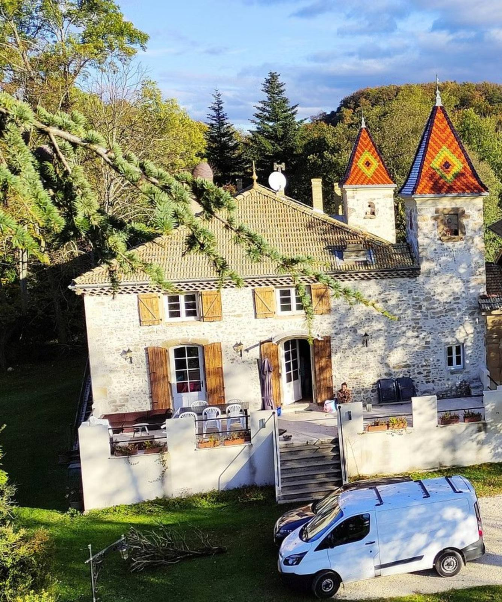
Pilates retreat & pottery or walks
Breathe, awaken your energy, strengthen your body gently and deeply. From Monday 5 to Friday 9 July 2027.
Drôme · Drôme Valley · Summer 2027 · From clay to soul
Pottery shapes patience in the material, while Pilates sculpts strength in the core.
Two practices that meet to reveal the same harmony of movement and breath.
5 days to regenerate the body and strengthen it gently and deeply.
Gentle walking: 4 days to discover the Drôme through beautiful villages and unexpected horizons.
An invitation to balance
Five days in the heart of the Drôme valley to breathe, awaken your energy and gently strengthen your body. Pilates, with Isabelle, sets the rhythm of the stay morning and evening.
Depending on what you fancy, two options complement the practice: the raku pottery workshop with Catherine, where earth is transformed by fire, and picturesque walks in the morning with Céline, among villages and remarkable natural sites.
Between sessions, the estate's swimming pool is yours to enjoy freely.
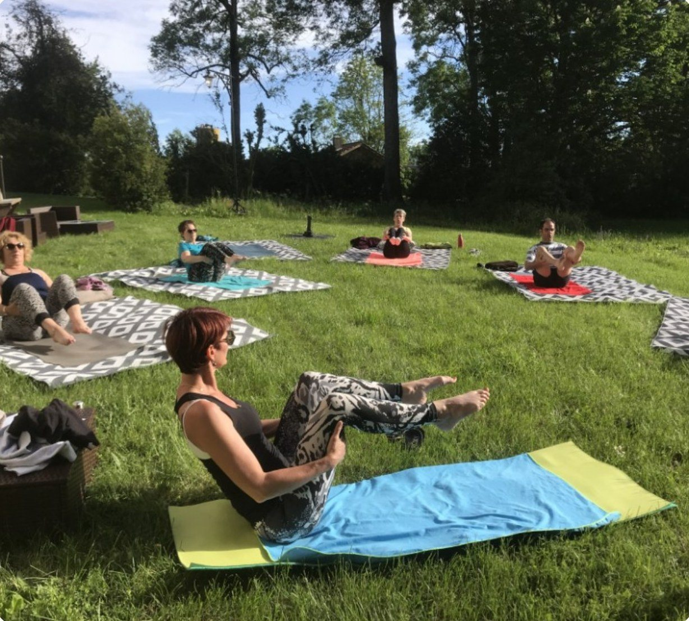
The benefits of Pilates
- FlexibilityStretch the muscles safely and gain range of movement, day to day.
- CoreBack, abdomen, pelvic floor: a strong core supports the whole body.
- PostureGood alignment to move freely and ease the back.
- EnergyToned breathing and circulation: a virtuous circle.
- The whole bodyHarmonious muscles, guided by breath and attention.
- All levelsDiscovery or improvement, with and without equipment.
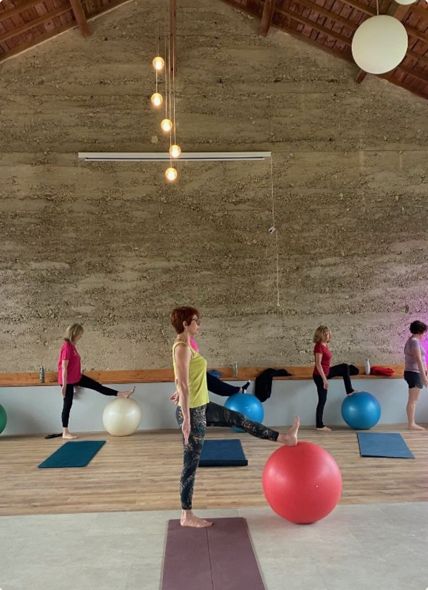
Programme
The rhythm of the days
- 1
Monday 5 July
From 10 am: arrival and settling in at the estate.
Welcome, introduction to the retreat and first Pilates session. - 2
Tuesday, Wednesday, Thursday
7:30: breakfast
8 am: Pilates 1h30, with and without equipment
Option: picturesque morning walk
Day: raku workshop (option), swimming pool, relaxation
Evening: Pilates-stretching 1h30
8 pm: dinner - 3
Friday 9 July
Morning: final Pilates session.
11 am: close of the retreat, body regenerated.
Pilates times will adapt to the pottery firing. Meals on site or packed, depending on activities.
Option · 10 people maximum
The workshop of raku pottery
Transform earth with fire, that's the magic of raku! With Catherine, around ten hours of workshop over 3 days, depending on the pieces made.
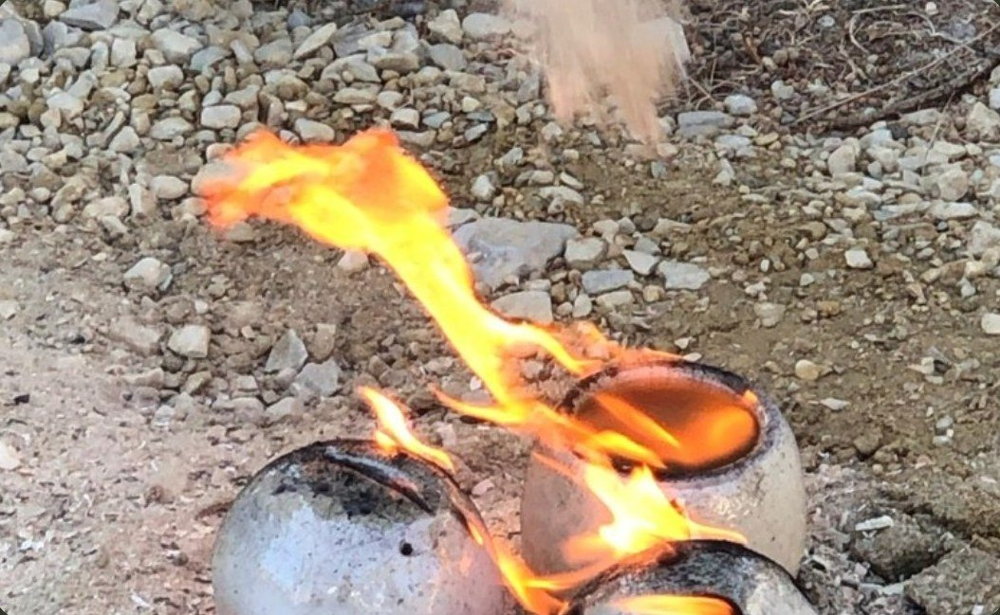
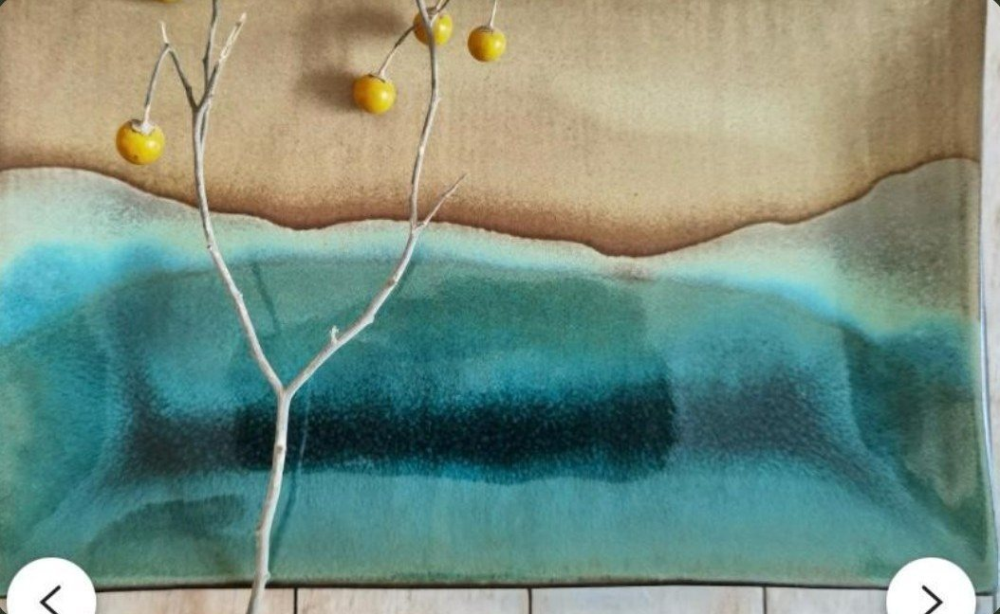
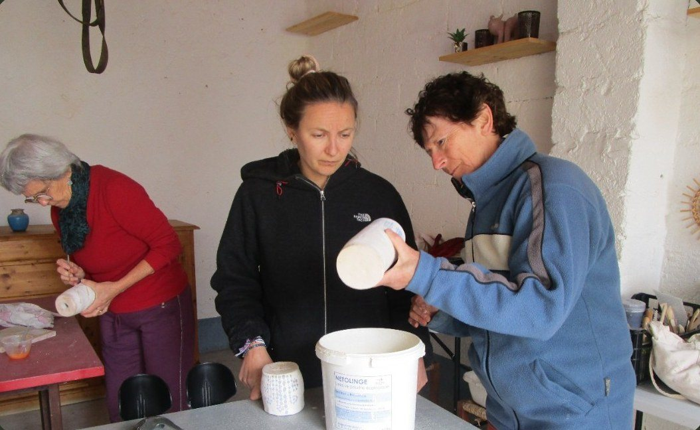
Option · in the morning
The walks picturesque
With Céline, set off to discover the Drôme valley: its river, its villages of character, its local produce and its remarkable natural sites. Car sharing from the estate.

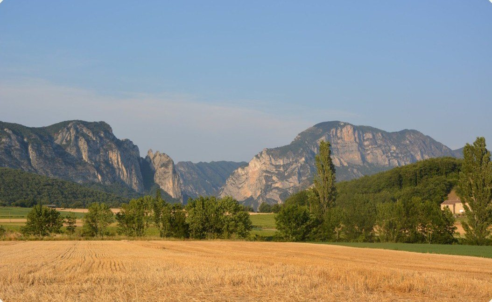
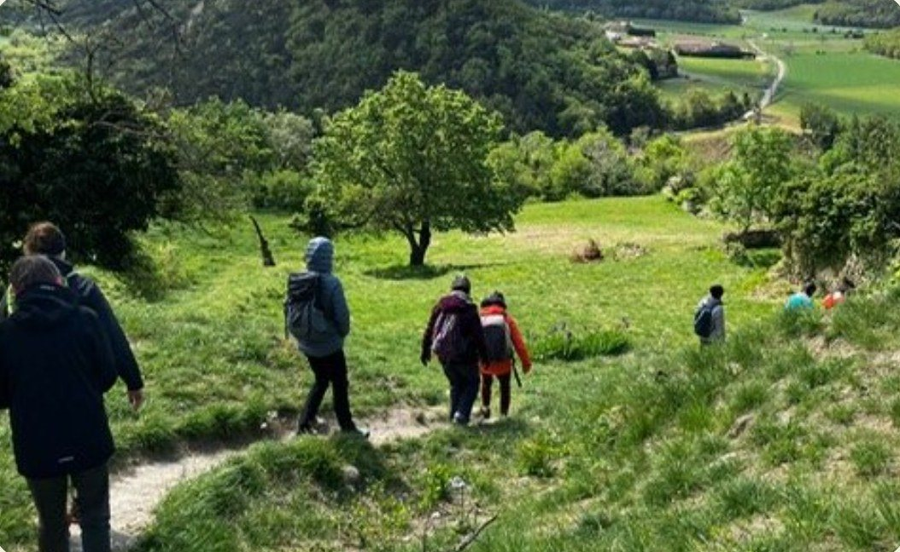
Teachers
Your guides
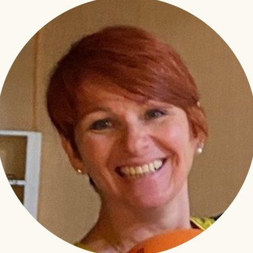
Isabelle Bugada
Pilates teacher
Certified and experienced, Isabelle guides you, whether you are discovering or improving, in the morning and evening sessions.
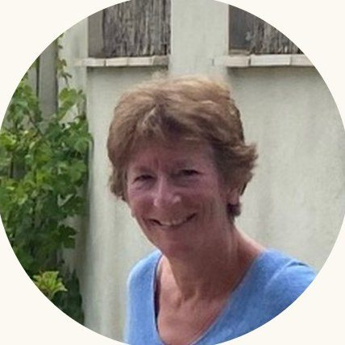
Catherine Vieux
Raku ceramicist
Catherine runs the raku pottery workshop: modelling, firing in the flames and decorating a dish she has thrown.

Céline Duverney
Estate manager
Keeper of the Domaine des Chabriers and a lover of art and nature, Céline welcomes you and shows you the Drôme valley.
The Estate des Chabriers
In the Drôme valley, a house of character, a park with century-old trees and a pool to enjoy freely: an ideal setting to recharge in high summer.
Accommodation
Shared double room with bathroom.
In the group gîte: €80 discount
Single room: + 50 €
Meals
Full board, home-made flexitarian meals with local produce, adapted to allergies.
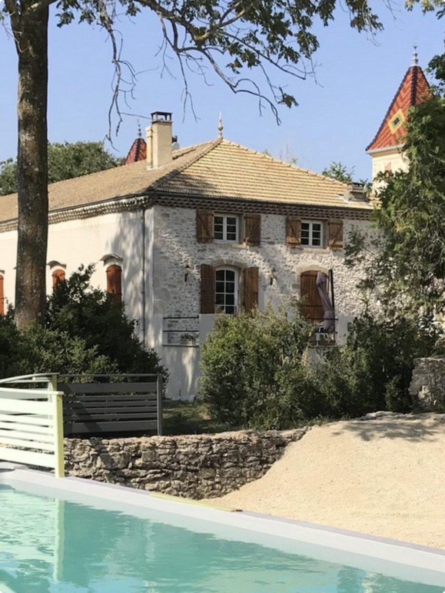
Practical information
Price, dates and booking
Price
670 €
5 days of Pilates and 4 nights full board.
Options: raku pottery and walks, prices to be confirmed.
Dates
From Monday 5 to Friday 9 July 2027
Arrival on Monday from 10 am, close on Friday at 11 am
5 days and 4 nights
Venue and booking
Domaine des Chabriers
470 route de la Salette
26120 Ourches, Drôme
domainedeschabriers@gmail.com
Céline · 06 28 23 90 21
Isabelle · 06 95 33 54 60
Catherine · 06 78 70 15 94
Retreat limited to 20 participants, raku option to 10 people. Good physical condition recommended. Travel not included.
This retreat is an invitation to breathe, create and grow stronger. Come and rediscover the harmony of movement and breath in the heart of the Drôme. We look forward to welcoming you.